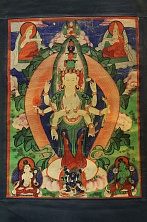

Авалокитешвара (санскр. “Владыка смотрящий с высоты” "Тот кто внимает звукам мира", тиб. Ченрези) является бодхисаттвой Великого Сострадания. Тройка центральных бодхисаттв Авалокитешвара, Манджушри и Ваджрапани знаменует сострадательность, мудрость и могущество всех будд и бодхисаттв прошлого, настоящего и будущего во всех мирах. Традиционно с Авалокитешварой связывют Сутру Сердца, один из центральных текстов буддизма, в сжатой форме указывающего на вещи как они есть. Далай ламу XIV традиционно считают последовательным воплощением бодхисатвы Авалокитешвары на земле. Опираясь на запредельную мудрость Авалокитешвара может присутствовать одновременно в множестве миров, и сразу в трех временах, поскольку правильно распознает природу всего сущего, он движим намереньем помочь всем живым существам достичь освобождения и Просветления.
Мантра Авалокитешвары, это безусловно самая знаменитая шестислоговая мантра буддизма ОМ МАНИ ПАДМЕ ХУМ.
Существует тибетская легенда о Тысячеруком Ченрези.
В давние-давние времена в отдаленном от нас мире Авалокитешвара дал клятву своему духовному отцу, будде Амитабхе, что «ни на одно мгновение не оставит ни одно живое существо, пока оно не будет спасено из сансары, даже если придется пожертвовать собственным миром, покоем и радостью». В довершении он дал обет, что если не выполнит обещание, то тогда распасться его телу на тысячу частей. Исполненый прямого намерения бодхисаттва сострадания погрузился в глубокую медитацию. Выйдя из созерцания, он узрел, что смог избавить от страданий сансары лишь немногих. Печаль охватила его, голова лопнула на десять частей, а тело на тысячу. Амитабха изрек «Все причины и следствия взаимозависимы. Начальный момент – это намерение. Твое особое решение было проявлением желания всех будд».Тогда магической силой Татхагаты (верховного будды) он возродил его тело, превратив тысячу кусков в тысячу рук, на каждой из которых проявился глаз мудрости. Десять частей расколовшейся головы он обратил в десять голов, добавив еще одну голову сверху от себя, она красного цвета будды Амитабхи и имеет гневный лик.
Считается, что Авалокитешвара уйдет в нирвану самым последним, когда все существа уже покинут сансару. В этом его великая милость и миссия.